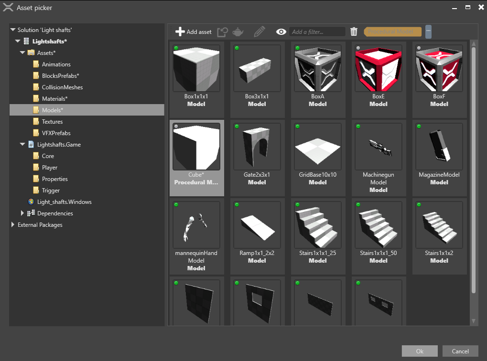

Light shafts
Warning
Приносим свои извинения за неудобства. Для этой страницы нет перевода на русский язык. Она будет отображаться на английском языке.
Beginner Designer Artist
Light shafts, also called god rays, are visible rays of light.
Stride light shafts are based on shadow maps and use raymarching rather than post effects, so they're visible even when the light source isn't. Any light source that casts shadows (ie point lights, directional lights and spot lights) can cast light shafts.
To create light shafts, use three components together: lights, light shafts, and light shaft bounding volumes.
1. Enable light shafts in the graphics compositor
By default, Stride disables light shafts in new projects. To enable them:
In the Asset View (in the bottom pane by default), double-click the Graphics Compositor asset.

The graphics compositor editor opens.
Select the forward renderer node.

In the Property Grid (on the right by default), next to Light shafts, click
 (Replace) and select LightShafts.
(Replace) and select LightShafts.
Make sure the light shafts checkbox is selected.

For more information about the graphics compositor, see the Graphics compositor page.
2. Add a light shaft component
In your scene, select the entity with the light you want to create light shafts. This must be a light that casts shadows (ie a point light, directional light, or spot light).
In the Property Grid, in the Light component properties, make sure the Shadow checkbox is selected.

Click Add component and select Light shaft.

Game Studio adds a light shaft component to the entity.
3. Add a bounding volume
The light shaft bounding volume defines the area in which light shafts are created. You can add the bounding volume to the same entity that has the directional light, but it's usually simpler to add it to a separate entity.
In the Asset View, click Add asset.
Under Models, select a model in the shape you want the volume to be. For example, if you use a cube, light shafts will be created in a cube-shaped area.

The Select an asset window opens.

You don't need a material for the model, so click Cancel to create a model without a material.
In the scene, create an empty entity. For now, it doesn't matter where you put it; you can reposition it later.
With the entity selected, in the Property Grid, click Add component and select light shaft bounding volume.
In the light shaft bounding volume component properties, next to light shaft, click
 (Select an asset).
(Select an asset).In the entity picker, select the entity with the directional light you want to create light shafts and click OK.
In the light shaft bounding volume component properties, next to Model, click
(Select an asset).In the Select an asset window, select the model you created and click OK.

This model defines the shape of the light shaft bounding volume.
Using the transform component, position and scale the entity to cover the area where you want to create light shafts.
Tip
To show or hide navigation light shaft bounding volumes in the Scene Editor, in the Scene Editor toolbar, open the gizmo options menu and use the Light shaft bounding volumes checkbox.

Light shaft properties

| Property | Description |
|---|---|
| Density | Higher values produce brighter light shafts |
| Sample count | Higher values produce better light shafts but use more GPU |
| Process bounding volumes separately | Preserves light shaft quality when seen through separate bounding boxes, but uses more GPU |
Light shaft graphics compositor properties
To access these properties, in the graphics compositor editor, select the forward renderer node and expand Light Shafts.
These properties apply globally to all the light shafts in the scene.
| Property | Description |
|---|---|
| Bounding volume buffer downsample level | Lower values produce more precise volume buffer areas, but use more GPU |
| Light buffer downsample level | Lower values produce sharper light shafts, but use more GPU |
Optimize light shafts
Light shafts work best in dark environments. You can adjust the light and light shaft component properties to achieve different results — for example, by changing the light color (in the light component properties) or the light shaft density (in the light shaft component properties).
Multiple light shafts viewed through one another can become visually noisy, as in the screenshot below:
To reduce this effect, in the light shaft component properties, reduce the density and increase the sample count.

Alternatively, add additional bounding volumes and process them separately. To do this:
Create additional bounding volumes and position them to cover the areas where you want to create light shafts. Make sure the bounding volumes don't overlap, as this makes light shafts extra-bright.
In the light shaft component properties, make sure Process bounding volumes separately is selected.

Note
Processing bounding volumes separately uses more GPU.